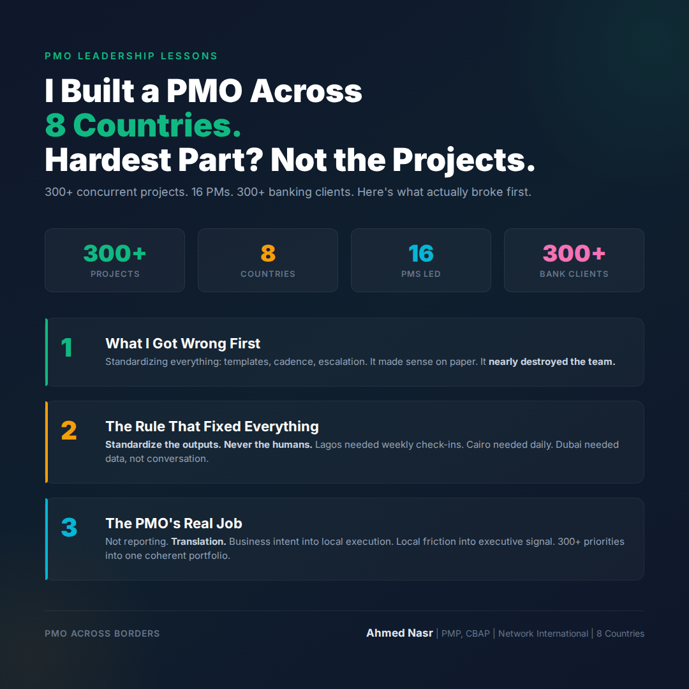
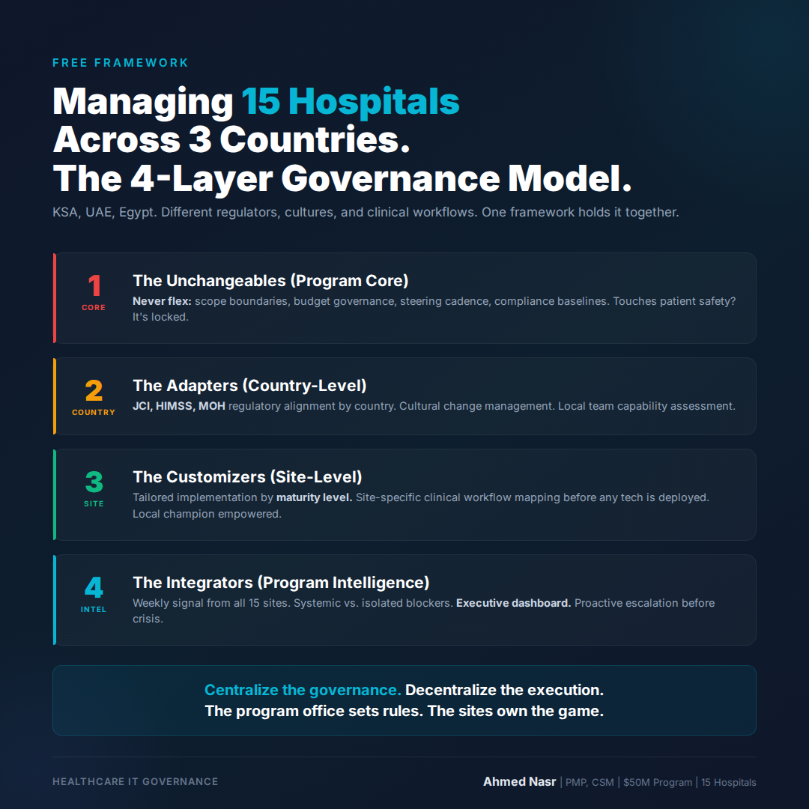
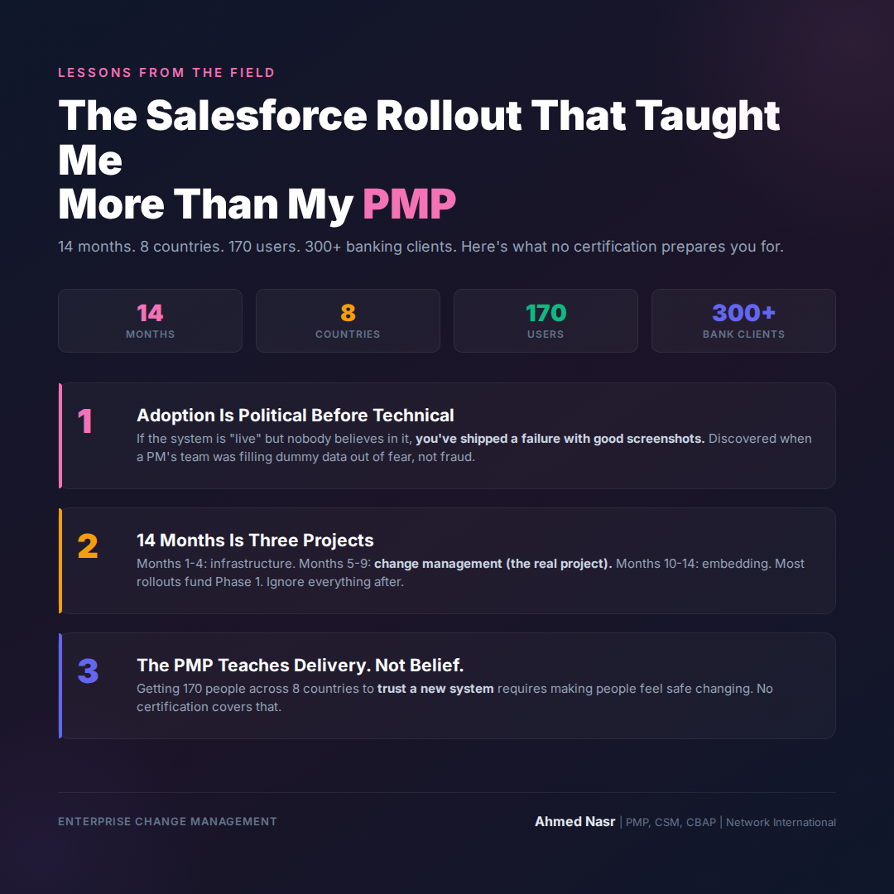
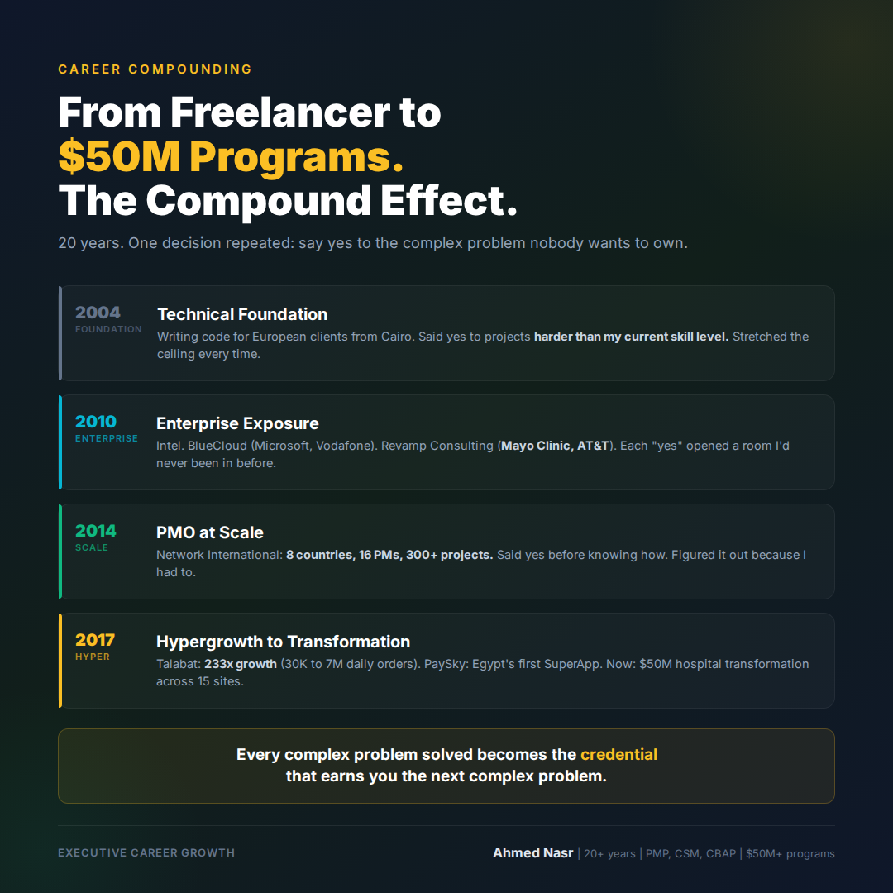

I built a PMO across 8 countries. The hardest part wasn't the projects. At Network International, I inherited a portfolio of 300+ banking and payments projects running across Egypt, UAE, Jordan, Kenya, Nigeria, Ghana, Mauritius, and South Africa. 300+ concurrent projects. 8 countries. 16 project managers I recruited and trained myself. 300+ banking clients worldwide. You'd think the hard part was the complexity. It wasn't. **The hard part was the first Monday morning call.** I had PMs in Lagos who worked differently from PMs in Nairobi. I had clients in Dubai who communicated differently from clients in Cairo. I had a governance model designed for one market trying to hold eight together. Here's what I got wrong first: I tried to standardize everything. Same templates. Same reporting cadence. Same escalation path. Same everything. It made sense on paper. It nearly destroyed the team. What I learned over 3 years of figuring this out: **Standardize the outputs. Never the humans.** The deliverable looks the same in every country. The path to get there is different in every country. Lagos needed weekly check-ins. Cairo needed daily ones. Dubai needed the data, not the conversation. Once I stopped treating 8 countries like one market with 8 offices, everything changed. **The PMO stopped being a reporting function.** It became a translation function. Translating business intent into local execution. Translating local friction into executive-level signal. Translating 300+ competing priorities into a coherent portfolio. The best PMO frameworks aren't built from certifications. They're built from the scar tissue of getting it wrong in 8 different time zones. What's the biggest misconception about PMO leadership you've seen? .. By the way, I've been documenting my journey managing a $50M hospital transformation across 3 countries. If you're navigating a similar challenge, happy to share what's working. Drop a comment or DM. #PMO #ProjectManagement #Leadership #Operations #GCC

Managing hospitals across countries is breaking PMOs. Here's the exact framework I use. Most hospital transformation programs fail the same way. Not because of bad technology. Not because of budget overruns. Not because of poor planning. They fail because a framework designed for one entity gets force-applied to 15 different ones. In my current role, I'm leading a digital transformation program across a 15-hospital network spanning 3 countries: KSA, UAE, and Egypt. Each hospital has its own culture. Each country has its own regulatory framework: JCI, HIMSS, MOH requirements that don't align cleanly. Each clinical department has its own definition of "success." Here's the 4-layer governance model that's holding it together: **Layer 1: The Unchangeables (Program Core)** These never flex, regardless of site or country. Scope boundaries. Budget governance. Executive steering cadence. Compliance baselines. If it touches patient safety or regulatory risk, it's locked. **Layer 2: The Adapters (Country-Level)** Regulatory alignment to local MOH requirements. Stakeholder mapping by country. Cultural protocols for change management. Local team capacity and capability assessments. **Layer 3: The Customizers (Site-Level)** Each hospital gets a tailored implementation sequence. Prioritization based on current maturity level, not a standardized roadmap. Site-specific clinical workflow mapping before any technology is deployed. Local champion identified and empowered before go-live. **Layer 4: The Integrators (Program Intelligence)** Weekly signal aggregation from all 15 sites. Pattern recognition: which blockers are systemic vs. isolated? Executive-level dashboard that separates noise from signal. Proactive escalation before issues become crises. The instinct with multi-site programs is to centralize control. That's exactly wrong. **Centralize the governance. Decentralize the execution.** The program office sets the rules. The sites own the game. If you're managing a multi-site or multi-country program and you're fighting your own governance model, the problem usually lives in Layer 2. Which layer is breaking down in your program right now? .. By the way, I'm writing a series on PMO frameworks that actually work at scale. Follow me for weekly breakdowns from managing 300+ concurrent projects across 8 countries. #PMO #HealthcareIT #DigitalTransformation #ProgramManagement #Governance

The Salesforce rollout taught me more than my PMP. Nobody told me it would take 14 months. When Network International handed me the keys to a Salesforce implementation, I thought I was ready. PMP certified. CSM certified. CBAP certified. 300+ projects under my belt. I was wrong. This wasn't a project. It was a 14-month organizational change program hiding inside a technology deployment. **The scope:** Full Salesforce platform rollout. CRM, service management, client engagement. **The footprint:** 8 countries. Egypt, UAE, Jordan, Kenya, Nigeria, Ghana, Mauritius, South Africa. **The users:** 170 people across all of them. **The client data:** 300+ banking institutions. Week 3, I got my first real lesson. A PM in Nairobi came to me privately. Her team had been filling in Salesforce records with dummy data to hit the go-live milestone. Not fraud. Fear. Fear that non-adoption would reflect badly on them personally. That one conversation restructured everything I thought I knew about enterprise software rollouts. **Lesson 1: Adoption is a political problem before it's a technical one.** If the system is "live" but nobody believes in it, you've shipped a failure with good screenshots. **Lesson 2: 14 months is actually multiple projects.** Months 1-4: Infrastructure and configuration. Months 5-9: Change management (the real project). Months 10-14: Embedding and behavioral shift. Most rollouts fail because they fund Month 1-4 and ignore everything after. **Lesson 3: The PMP teaches you to deliver projects.** Nobody teaches you to deliver belief. Getting 170 people across 8 countries to trust a new system requires something no certification gives you: the ability to make people feel safe changing. The best implementations I've seen don't celebrate go-live. They celebrate first real adoption 90 days after. What was the moment that changed how you think about enterprise software rollouts? .. By the way, I'm currently exploring VP/C-suite digital transformation roles across the GCC. If your network is hiring leaders who've scaled platforms from 30K to 7M daily orders, I'd love to connect. DM me or check my profile. #Salesforce #ChangeManagement #PMO #Leadership #EnterpriseIT

From freelancer to $50M programs. The compound effect of saying yes to complexity. In 2004, I was writing code for European clients from Cairo. Per-project. Per-feature. Whatever came through the door. By 2014, I was running a PMO across 8 countries managing 300+ concurrent banking projects. By 2024, I was leading a $50M digital transformation across 15 hospitals in 3 countries. The gap between 2004 and 2024 wasn't luck. It wasn't a single career-defining moment. It was a pattern of one specific decision, made over and over: **Say yes to the complex problem nobody wants to own.** Here's how the compounding worked: **2004-2009: Technical foundation.** I said yes to projects that were technically harder than my current skill level. Code Republic, PEARDEV, early SaaS development for European clients. Each one stretched the ceiling. **2010-2013: Enterprise exposure.** I said yes to Intel. Then BlueCloud managing Microsoft and Vodafone accounts. Then Revamp Consulting with Mayo Clinic and AT&T. Each "yes" opened a room I'd never been in before. **2014-2017: Scale.** Network International. 8 countries. 16 PMs. 300+ projects. I said yes before I knew exactly how to do it. I figured it out because I had to. **2017-2024: Hypergrowth to transformation.** Talabat: 233x growth. PaySky: Egypt's first SuperApp. Then a $50M hospital network transformation that's still running. The compounding secret isn't "work harder." It's: **Every complex problem you solve becomes the credential that earns you the next complex problem.** Most people wait until they feel ready. Ready doesn't come before the complex problem. It comes because of it. The question I ask myself before saying yes to something hard: "Will solving this open a door I couldn't see from here?" If yes, I say yes. What was the complexity you said yes to that changed your trajectory? .. By the way, I've been documenting my journey managing a $50M hospital transformation across 3 countries. If you're navigating a similar challenge, happy to share what's working. Drop a comment or DM. #CareerGrowth #Leadership #DigitalTransformation #PMO #ExecutiveLife